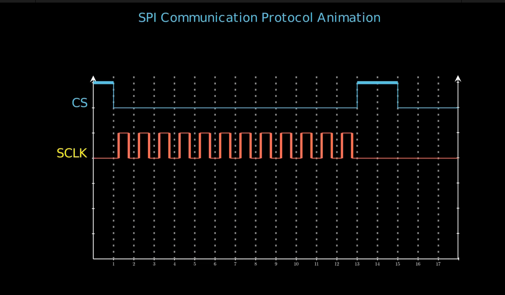

title: “SPI Protocol Animation with Manim” format: revealjs editor: visual —
Introduction
SPI (Serial Peripheral Interface) is faster and simpler than I2C, with no addressing delays, making it better for high-speed data transfer (e.g., SD cards, displays). However, SPI requires more wires (4+ vs. I2C’s 2) and lacks built-in acknowledgment, making I2C better for multi-device, low-speed systems (e.g., sensors). I2C supports hot-swapping, while SPI needs fixed connections. Choose SPI for speed, I2C for simplicity and scalability—each excels in different embedded applications.
1. Imports, Constants, and Main Class
from manim import *
CPOL = 0
CPHA = 0
class Main(Scene):
...Explanation:
- from manim import *: Imports all modules from the Manim library, used for creating mathematical and technical animations.
- CPOL (Clock Polarity) and CPHA (Clock Phase): Constants used to configure SPI (Serial Peripheral Interface) clock behavior.
- CPOL: Determines the idle state of the clock (0 = low idle).
- CPHA: Determines when data is sampled (0 = on leading/first edge).
- class Main(Scene): Defines the main animation scene that will be rendered by Manim.
2. Plotting Step Functions (Digital Data Lines) - Function Start
def plot_step_function(
self, data_bits, axe, color, initial_y, CPHA=0, dy=0, disabled=True
):
initial_x = 1.5 if CPHA else 0 if disabled else 0.5
start_x = initial_x
start_y = initial_y
stroke_width_data = 8
stroke_width_empty = 2
# Leading line if enabled
if not disabled:
additional_line = Line(
axe.c2p(axe.x_range[0], start_y),
axe.c2p(initial_x, start_y),
color=color,
stroke_width=stroke_width_empty,
)
self.play(Create(additional_line), run_time=0.25)Explanation:
- Purpose: Visualizes step-wise digital signals (e.g., CS, MOSI, or MISO lines).
- initial_x: Sets starting X position based on CPHA and whether the line is disabled.
- Leading line: If enabled, a horizontal line is drawn from the y-axis to the signal start, helping to visually anchor the signal.
3. Plotting the Data Bits (Continued)
for i, bit in enumerate(data_bits):
end_x = initial_x + i + 1
line = Line(
axe.c2p(start_x, start_y),
axe.c2p(end_x, start_y),
color=color,
stroke_width=stroke_width_data if bit == 1 else stroke_width_empty,
)
if CPHA and i == len(data_bits) - 1:
pass
else:
self.play(Create(line), run_time=0.25)
# Vertical transition if bit changes
if i < len(data_bits) - 1 and data_bits[i + 1] != bit:
transition_line = Line(
axe.c2p(end_x, start_y),
axe.c2p(end_x, initial_y - dy + data_bits[i + 1]),
color=color,
stroke_width=stroke_width_empty,
)
self.play(Create(transition_line), run_time=0.1)
start_x = end_x
start_y = (
initial_y - dy + data_bits[i + 1]
if i < len(data_bits) - 1
else initial_y - dy
)Explanation: - Horizontal lines: Each bit is drawn as a horizontal segment. - Bit 1: Drawn with a thicker line. - Bit 0: Drawn with a thinner line. - Vertical transitions: When the bit value changes, a vertical line is drawn showing the signal transition. - CPHA adjustment: Handles timing of the line drawing based on SPI clock phase.

4. Plot Step Function: Final Line
if not disabled:
additional_line = Line(
axe.c2p(initial_x + len(data_bits), start_y),
axe.c2p(axe.x_range[1], start_y),
color=color,
stroke_width=stroke_width_empty,
)
self.play(Create(additional_line), run_time=0.25)Explanation: - Final extension: Extends the signal line to the end of the axis for clarity if enabled.
5. Generating the SPI Clock Signal
def generate_clock_signal(self, length, axe, color, initial_y, CPOL=0):
start_x = 1
start_y = initial_y + 1 if CPOL else initial_y
stroke_width_data = 6
stroke_width_empty = 2
# Initial idle line
no_clock_line_1 = Line(
axe.c2p(axe.x_range[0], start_y),
axe.c2p(start_x, start_y),
color=color,
stroke_width=stroke_width_empty,
)
self.play(Create(no_clock_line_1), run_time=0.25)Explanation:
- Clock signal initialization: Sets the starting point of the SPI clock waveform.
- Idle line: Draws the clock’s idle state before the first pulse, with the level determined by CPOL.
6. Clock Signal Cycles
for i in range(start_x, length + 1):
...
self.play(Create(low_state_start), run_time=0.1)
self.play(Create(rising_edge), run_time=0.25)
self.play(Create(high_state), run_time=0.1)
self.play(Create(falling_edge), run_time=0.25)
self.play(Create(low_state_end), run_time=0.1)
start_x = start_x + 1Explanation:
- For each clock cycle:
- Low state start: Horizontal line at the low level.
- Rising edge: Vertical line up (clock goes high).
- High state: Horizontal line at the high level.
- Falling edge: Vertical line down (clock goes low).
- Low state end: Returns to the low baseline.
- These steps animate the SPI clock waveform.
7. Final Idle Clock Line
no_clock_line_2 = Line(
axe.c2p(length + 1, start_y),
axe.c2p(axe.x_range[1], start_y),
color=color,
stroke_width=stroke_width_empty,
)
self.play(Create(no_clock_line_2), run_time=0.25)Explanation:
- Final idle extension: Draws the idle clock line after the last pulse, indicating the clock has returned to its idle state.

8. Drawing Dotted Bit Separators
def create_dotted_lines(self, axe, length, run_time=0.2):
animations = []
for i in range(1, length + 1):
dotted_line = DashedLine(
axe.c2p(i, 0),
axe.c2p(i, 7.25),
dash_length=0.05,
dashed_ratio=0.3,
color="GREY",
)
animations.append(Create(dotted_line))
return AnimationGroup(*animations, run_time=run_time)Explanation:
- Purpose: Draws vertical dashed lines at each bit position for visual clarity.
- Helps segment: Each bit in SPI transmission is clearly separated.
9. Scene Construction: SPI Data Setup
def construct(self):
cs_line_data = [1, 0, 0, 0, 0, 0, 0, 0, 0, 0, 0, 0, 0, 1, 1, 0, 0, 0]
mosi_line_data = [0, 1, 0, 1, 0, 0, 1, 1, 0, 0, 0, 0, 0, 1, 0, 0, 0]
miso_line_data = [0, 1, 1, 1, 0, 0, 0, 0, 0, 0, 0, 0, 0, 1, 1, 0, 0]
...Explanation:
- Data lists: Represent the bit sequences for:
- CS (Chip Select)
- MOSI (Master Out, Slave In)
- MISO (Master In, Slave Out)
10. Axes, Labels, and Title Setup
axe = Axes(...)
extra_y_axis = axe.get_y_axis().copy().next_to(...)
...
title = Text("SPI Communication Protocol Animation", ...).to_edge(UP*0.5)
self.play(Create(title), run_time=1)Explanation:
- Axes: X-axis shows time/bit positions; Y-axis shows signal levels.
- Extra Y-axis: For visual clarity.
- Title: Scene title is created and displayed.
11. Animation Sequence
self.play(Create(axe), Create(extra_y_axis), ...)
...
self.play(Write(cs_line_label))
self.plot_step_function(cs_line_data, ...)
...
self.generate_clock_signal(...)
...
self.plot_step_function(mosi_line_data, ...)
self.plot_step_function(miso_line_data, ...)Explanation:
- Timeline:
- Axes and dotted lines appear first.
- CS line drawn (starts SPI communication).
- SPI clock is generated.
- MOSI and MISO data lines are animated.
- Each signal is labeled before being drawn.
12. CS Line Transition and Scene Fade Out
self.play(Create(cs_transition_line), ...)
self.play(Create(cs_disable_line), ...)
...
self.play(*[FadeOut(mob) for mob in self.mobjects], ...)Explanation:
- CS transitions: Indicate end of SPI communication.
- Fade out: Scene elements fade for a smooth and professional animation exit.
Summary
- The code uses Manim to visually animate the SPI protocol signals.
- plot_step_function: Animates step-wise transitions for digital data lines (CS, MOSI, MISO).
- generate_clock_signal: Animates the SPI clock in sync with data transfer, respecting CPOL.
- create_dotted_lines: Adds vertical dashed lines to mark each bit interval.
- construct: Orchestrates the entire animation, from axes and labels to signal transitions and scene fade-out.
- Purpose: Provides a clear, educational visualization of how SPI signals interact during data transfer.